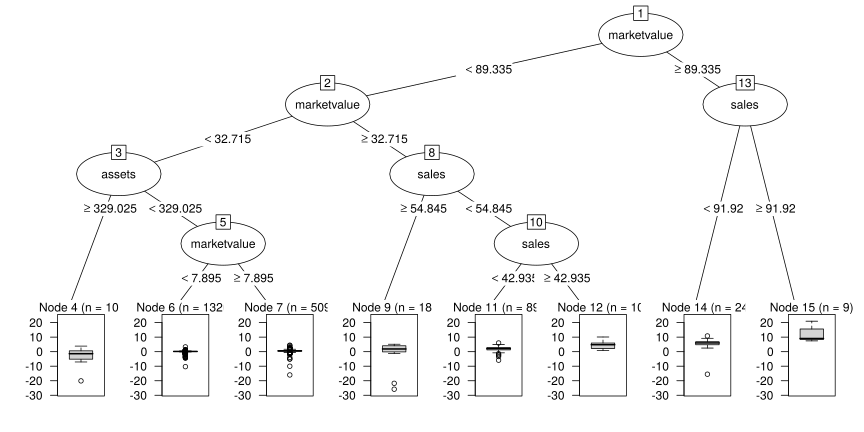
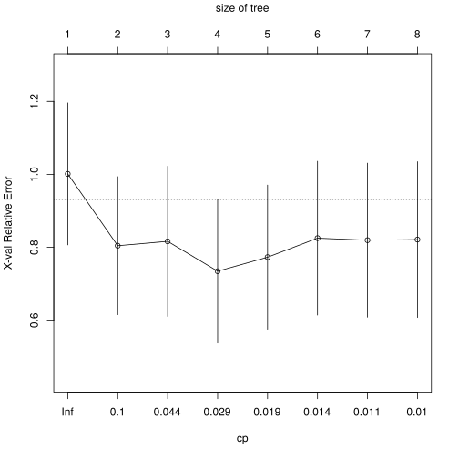
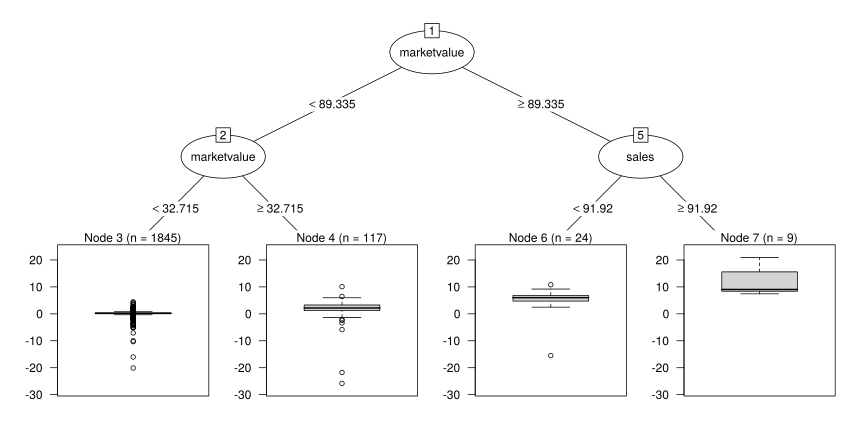
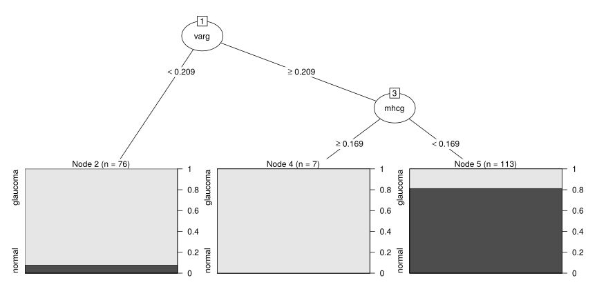
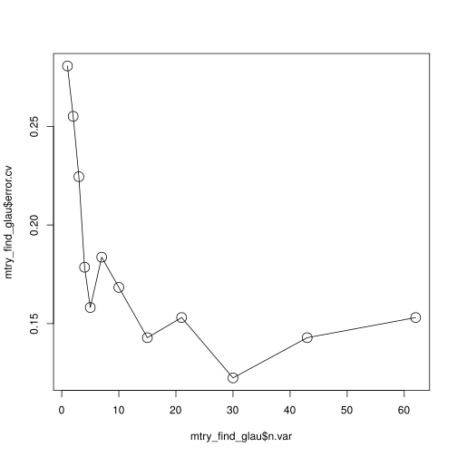
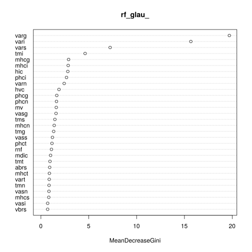

A particular kind of nonlinear predictive model: prediction trees.
2 varieties:
Then we’ll look at ways to combine multiple trees
Tree-based methods aim at predicting \(y\) from a feature vector \(x \in \mathbb{R}^p\)
This works both when \(y\) is discrete and continuous, i.e., both for classification and regression
Consider a regression problem with a continuous response \(Y\) and explanatory variables \(X_1\) and \(X_2\).
The result of this process is a partition into regions \(R_1, R_2, \dots, R_5\).
The corresponding regression model predicts \(Y\) with a constant \(c_m\) in Region \(R_m\),
\(\hat{f}(X) = \sum_{i = 1}^5 c_m{\mathbf{I}}\{(X_1, X_2) \in R_m\}\)
This model can be represented by a binary tree
The data consist of p explanatory variables and an outcome for \(n\) individuals
The algorithm needs to automatically decide on the splitting variables and split points.
Suppose that we have a partition into \(M\) regions \(R_1, R_2, \dots, R_M\), and we model the response as a constant \(c_m\) in each region
\[f(x) = \sum_{m = 1}^M c_m{\mathbf{I}}(x \in R_m)\]
Using the sum of squares
\[\sum (y_i - f(x_i))^2\]
as minimisation criterion, the best \(\hat{c}_m\) is the average of \(y_i\) in region \(R_m\)
\[\hat{c}_m = \frac{1}{n_m} \sum_{x_i \in R_m} y_i\]
But finding the best binary partition in terms of minimum sum of squares is generally computationally infeasible.
Instead we use a greedy algorithm:
Starting with all the data, consider a splitting variable \(j\) and split point \(s\), and define the pair of half-planes
\[ R_1(j, s) = \{X|X_j \leq s\} \quad \text{and} \quad R_2(j, s) = \{X|X_j > s\} \]
Then seek the splitting variable \(j\) and split point \(s\) that solve
\[ \min_{j, s} \left[\min_{c_1} \sum_{x_i \in R_1(j, s)} (y_i - c_1)^2 + \min_{c_2} \sum_{x_i \in R_2(j, s)} (y_i - c_2)^2\right] \]
For any choice \(j\) and \(s\), the inner minimisation is solved by
\[ \hat{c}_1 = \frac{1}{n_1} \sum_{x_i \in R_1} y_i \quad \text{and} \quad \hat{c}_2 = \frac{1}{n_2} \sum_{x_i \in R_2} y_i \]
Having found the best split, we partition the data into the two resulting regions and repeat the process in each of the two regions …
How large should the tree be?
Too large, we may overfit the data (e.g., 1 data point per region is useless).
Too small, we might miss some important structure in the data
→ Tree size is a tuning parameter governing the model’s complexity, and the optimal tree size should be chosen from the data
Pruning
Grow a large tree \(T_0\), stopping the splitting process only when some minimum node size is reached
Prune this large tree using cost-complexity pruning
Define a subtree \(T \subset T_0\) that can be obtained by pruning \(T_0\)
Let \(m\) be the index of the terminal nodes, with node \(m\) representing region \(R_m\).
Let \(\lvert T \rvert\) denote the number of terminal nodes in \(T\)
Let
\[ \begin{align} N_m &= \#\{x_i \in R_m\}, \\ \hat{c}_m &= \frac{1}{n_m} \sum_{x_i \in R_m} y_i, \\ Q_m(T) &= \frac{1}{n_m} \sum_{x_i \in R_m} (y_i - \hat{c}_m)^2 \end{align} \]
The cost complexity criterion is defined as
\[ C_\alpha(T) = \sum_{m = 1}^{\lvert T \rvert} N_mQ_m(T) + \alpha\lvert T \rvert \]
The tuning parameter \(\alpha \geq 0\) governs the trade-off between tree-size and goodness-of-fit.
\(\alpha\) chosen via a validation set or cross-validation
Cross-validation is a widely used method for estimating prediction error
\[L(Y^{-k}, \hat{f}^{-k}(X)) = (y^{-k} - \hat{f}^{-k}(x))^2\]
The procedure is repeated \(k\)-times resulting in \(k\) estimates of the test error
The \(k\)-fold CV estimate is then
\[ CV_{(k)} = \frac{1}{k}\sum_{j = 1}^k L(Y^{-j}, \hat{f}^{-j}(X)) \]
\(k\) is typically set to 5 or 10.
Use \(k\)-fold cross-validation to chose \(\alpha\), i.e., divide the data into \(K\) folds. For each \(k = 1, \dots, K\)
Average the results for each value of \(\alpha\), and pick \(\alpha\) to minimise the average error
Now the target is a classification outcome taking values \(1, 2, 3, \dots, K\)
The only changes needed in the algorithm is in the splitting criterion and how to prune the tree
Let
\[ \hat{p}_{mk} = \frac{1}{n_m} \sum_{x_i \in R_m} {\mathbf{I}}(y_i = k) \]
the proportion of class \(k\) observations in node \(m\).
We classify the observations in node \(m\) to class
\[k(m) = \operatorname*{arg\,max}_k \hat{p}_{mk}\]
Different measures of node impurity can be defined
The latter 2 have the advantage that they are differentiable, hence more amenable to numerical optimisation
Forbes2000
The Forbes2000 contains the list of the world’s biggest industrial companies. Here, our interest is to construct a model explaining the profit of a company based on assets, sales and the market value.
data("Forbes2000", package = "HSAUR3")
head(Forbes2000) rank name country category sales
1 1 Citigroup United States Banking 94.71
2 2 General Electric United States Conglomerates 134.19
3 3 American Intl Group United States Insurance 76.66
4 4 ExxonMobil United States Oil & gas operations 222.88
5 5 BP United Kingdom Oil & gas operations 232.57
6 6 Bank of America United States Banking 49.01
profits assets marketvalue
1 17.85 1264.03 255.30
2 15.59 626.93 328.54
3 6.46 647.66 194.87
4 20.96 166.99 277.02
5 10.27 177.57 173.54
6 10.81 736.45 117.55library("rpart", quietly = TRUE)
Forbes2000 <- subset(Forbes2000, !is.na(profits))
fm <- profits ~ assets + marketvalue + sales
forbes_rpart <- rpart(fm, data = Forbes2000)library(partykit, quietly = TRUE)
plot(as.party(forbes_rpart))
print(forbes_rpart$cptable) CP nsplit rel error xerror xstd
1 0.23748446 0 1.0000000 1.0012286 0.1947829
2 0.04600397 1 0.7625155 0.8042608 0.1893762
3 0.04258786 2 0.7165116 0.8162056 0.2060592
4 0.02030891 3 0.6739237 0.7343190 0.1970225
5 0.01854336 4 0.6536148 0.7727965 0.1977633
6 0.01102304 5 0.6350714 0.8248992 0.2109600
7 0.01076006 6 0.6240484 0.8194330 0.2112987
8 0.01000000 7 0.6132883 0.8210051 0.2136873plotcp(forbes_rpart)
opt <- which.min(forbes_rpart$cptable[,"xerror"])
cp <- forbes_rpart$cptable[opt, "CP"]
forbes_prune <- prune(forbes_rpart, cp = cp)
plot(as.party(forbes_prune))
For \(196\) people, \(98\) patients suffering glaucoma and \(98\) controls which have been matched by age and sex, \(62\) numeric variables derived from the laser scanning images are available.
The variables describe the morphology of the optic nerve head, i.e., measures of volumes and areas in certain regions of the eye background. Those regions have been manually outlined by a physician. Our aim is to construct a prediction model which is able to decide whether an eye is affected by glaucomateous changes based on the laser image data.
Here, we are primarily interested in the construction of a predictor. The relationship between the \(62\) covariates and the glaucoma status itself is not very interesting. We start with a large initial tree and prune back branches according to the cross-validation criterion.
data("GlaucomaM", package = "TH.data")
set.seed(290875)
glaucoma_rpart <- rpart(Class ~ ., data = GlaucomaM,
control = rpart.control(minsplit = 2, xval = 100))
glaucoma_rpart$cptable CP nsplit rel error xerror xstd
1 0.65306122 0 1.00000000 1.5306122 0.06054391
2 0.07142857 1 0.34693878 0.3877551 0.05647630
3 0.04081633 2 0.27551020 0.3571429 0.05471329
4 0.03061224 3 0.23469388 0.4081633 0.05757556
5 0.02551020 4 0.20408163 0.4489796 0.05960655
6 0.02040816 6 0.15306122 0.4591837 0.06008148
7 0.01020408 9 0.09183673 0.4897959 0.06143238
8 0.01000000 16 0.02040816 0.5510204 0.06382443opt <- which.min(glaucoma_rpart$cptable[,"xerror"])
cp <- glaucoma_rpart$cptable[opt, "CP"]
glaucoma_prune <- prune(glaucoma_rpart, cp = cp)plot(as.party(glaucoma_prune))
Instability of trees
nsplitopt <- vector(mode = "integer", length = 25)
for (i in 1:length(nsplitopt)) {
cp <- rpart(Class ~ ., data = GlaucomaM)$cptable
nsplitopt[i] <- cp[which.min(cp[,"xerror"]),
"nsplit"]
}
table(nsplitopt)nsplitopt
1 2 5
14 7 4 Trees are easy to interpret
but have a high variance
The bootstrap is a widely applicable and extremely powerful statistical tool that can be used to quantify the uncertainty associated with a given estimator or statistical learning method.
Suppose that a r.v \(Y\) comes from a c.d.f \(F(y) = {\text{Pr}}(Y \leq y)\) and that we have a sample of size \(n\) coming from this unknown distribution.
As \(F\) is unknown we can’t do any derivation analytically → Simulate! But we don’t know \(F\)
\(F\) can be estimated from the empirical c.d.f
\[F_n(y) = \frac{1}{n}\sum_{i = 1}^n {\mathbf{I}}(Y_i \leq y).\]
Now pretend that \(F_n(y)\) is the original population distribution \(F(y)\).
Sampling from \(F_n\) is equivalent to sampling with replacement from the observed data \(Y_1, Y_2, \dots, Y_n\)
\[ \widehat{{\text{var}}}(T) = \frac{1}{B - 1} \sum_{b = 1}^B (T_b - \bar{T})^2 \]
with \(\bar{T} = 1/B \sum_b T_b\)
Consider we fit a model to the training data \({\mathbf{Z}}= \{(x_1, y_1), \dots, (x_n, y_n)\}\) and obtain the prediction \(\hat{f}(x)\) for input \(x\).
Bootstrap aggregation or bagging averages this prediction over a collection of bootstrap samples
→ Reduction in variance
For each bootstrap sample \({\mathbf{Z}}^{*b},\, b = 1, 2, \dots, B\), fit the model and obtain prediction \(\hat{f}^{*b}\).
The bagging estimate is defined as
\[ \hat{f}_{\text{bag}}(x) = \frac{1}{B} \sum_{b = 1}^B \hat{f}^{*b} \]
The idea of bagging was to average many noisy but unbiased models, and thus reduce the variance
Each tree generated in bagging is i.d.
\[\rho\sigma^2 + \frac{1 - \rho}{B}\sigma^2\]
As \(B\) increases, the second term disappears but the correlation of bagged trees limits the benefits of averaging.
→ The idea of random forest is to “de-correlate” the trees through random selection of the input variables
For \(b = 1\) to \(B\):
Grow a random-forest tree \(T_b\) to the bootstrapped data until the minimum node size \(n_{\min}\) is reached by repeating the following steps
Output the ensemble of trees \(\{T_b\}^B_1\)
To make a prediction at a new point \(x\):
regression: \(\hat{f}_{\text{rf}}^B(x) = \frac{1}{B}\sum_{b=1}^B T_b(x)\)
classification: Let \(\hat{C}_b(x)\) be the class prediction of the \(b\)-th random-forest tree. Then \(\hat{C}_{\text{rf}}^B(x) =\) majority vote \(\{\hat{C}_{\text{rf}}^B(x)\}_1^B\)
The inventors of random forest make the following recommendations
In practice, \(m\) should be treated as a tuning parameter
An important feature of random forests is its use of out-of-bag (OOB) samples:
An OOB error estimate is almost the same as that obtained by \(K\)-fold cross-validation.
No need for separate test data
Simple trees are easy to interpret. The entire model can be represented by a single graphic
Random forest and bagging loose this important feature and must be interpreted in different ways
For a single decision tree, the following measure can be used to compute a relative importance of a predictor \(X_l\)
\[{\cal I}_l^2(T) = \sum_{j = 1}^{J-1} \hat{i}_t^2{\mathbf{I}}(v(t) = l),\]
The squared relative importance of variable \(X_l\) is the sum of such squared improvements over all internal nodes for which it was chosen as the splitting variable
For bagging and random forests, this measure is averaged over the trees
\[{\cal I}_l^2 = \frac{1}{B}\sum_{b=1}^B {\cal I}_l^2(T_b)\]
(glau_bag <- randomForest(Class ~ ., GlaucomaM, mtry = ncol(GlaucomaM) - 1, importance = TRUE))
Call:
randomForest(formula = Class ~ ., data = GlaucomaM, mtry = ncol(GlaucomaM) - 1, importance = TRUE)
Type of random forest: classification
Number of trees: 500
No. of variables tried at each split: 62
OOB estimate of error rate: 15.82%
Confusion matrix:
glaucoma normal class.error
glaucoma 78 20 0.2040816
normal 11 87 0.1122449(glau_rf <- randomForest(Class ~ ., GlaucomaM, mtry = floor(sqrt(ncol(GlaucomaM) - 1)), importance = TRUE))
Call:
randomForest(formula = Class ~ ., data = GlaucomaM, mtry = floor(sqrt(ncol(GlaucomaM) - 1)), importance = TRUE)
Type of random forest: classification
Number of trees: 500
No. of variables tried at each split: 7
OOB estimate of error rate: 13.78%
Confusion matrix:
glaucoma normal class.error
glaucoma 82 16 0.1632653
normal 11 87 0.1122449Find \(mtry\) through cross-validation
set.seed(434)
mtry_find_glau <- rfcv(GlaucomaM[, -ncol(GlaucomaM)], GlaucomaM[, ncol(GlaucomaM)],
mtry = function(p) max(p/2, 1), step = 0.7)
plot(mtry_find_glau$n.var, mtry_find_glau$error.cv, type = "p", cex = 2)
lines(mtry_find_glau$n.var, mtry_find_glau$error.cv)
rf_glau_ <- randomForest(Class ~ ., GlaucomaM,
mtry = mtry_find_glau$n.var[which.min(mtry_find_glau$error.cv)],
importance = TRUE)
varImpPlot(rf_glau_, type = 2)